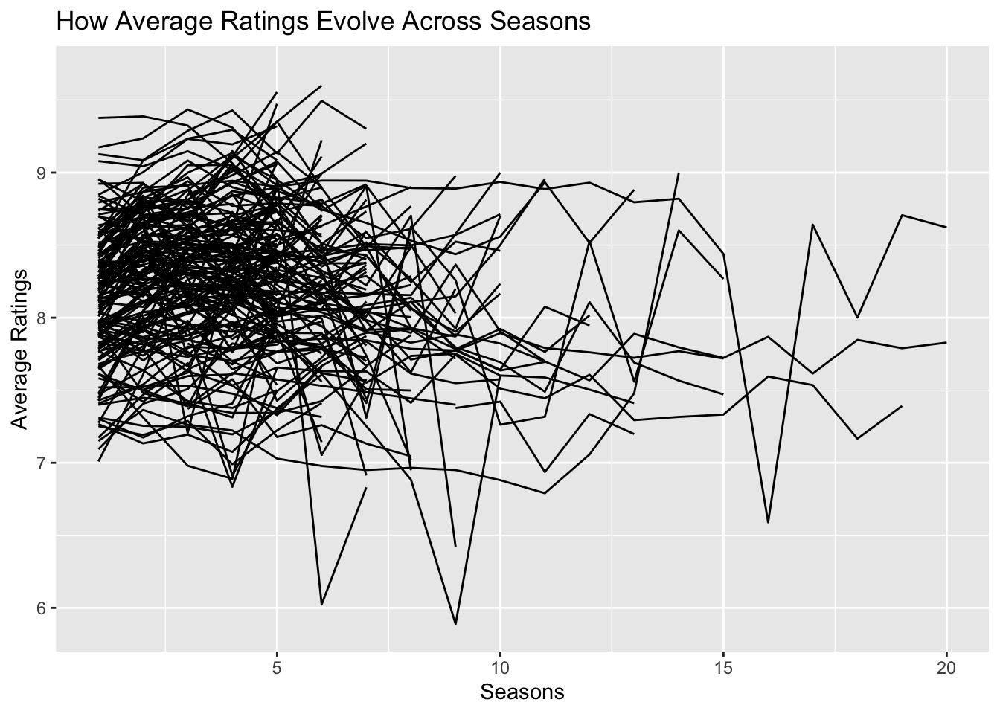
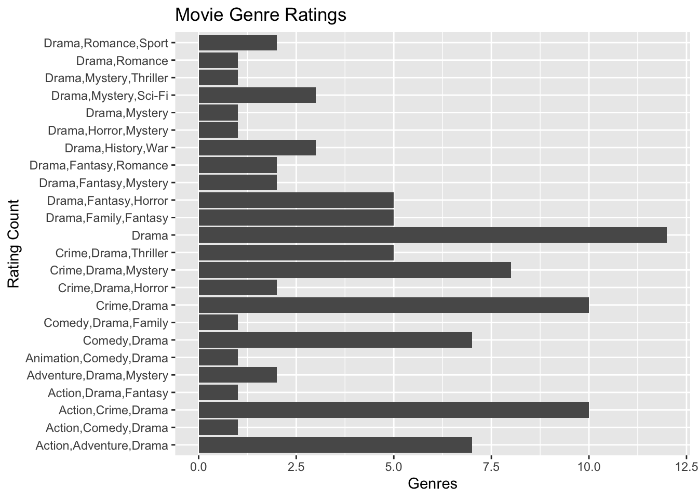
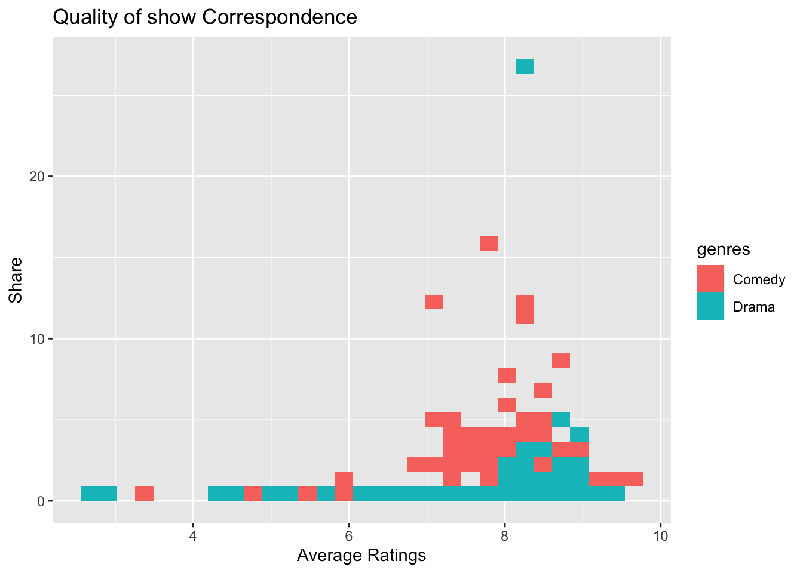

── Attaching core tidyverse packages ──────────────────────── tidyverse 2.0.0 ──
✔ dplyr 1.1.2 ✔ readr 2.1.4
✔ forcats 1.0.0 ✔ stringr 1.5.0
✔ ggplot2 3.4.3 ✔ tibble 3.2.1
✔ lubridate 1.9.2 ✔ tidyr 1.3.0
✔ purrr 1.0.2
── Conflicts ────────────────────────────────────────── tidyverse_conflicts() ──
✖ dplyr::filter() masks stats::filter()
✖ dplyr::lag() masks stats::lag()
ℹ Use the conflicted package (<http://conflicted.r-lib.org/>) to force all conflicts to become errors
# Read in the data tv_ratings <-read_csv("https://raw.githubusercontent.com/vaiseys/dav-course/main/Data/tv_ratings.csv")
Rows: 2266 Columns: 7
── Column specification ────────────────────────────────────────────────────────
Delimiter: ","
chr (3): titleId, title, genres
dbl (3): seasonNumber, av_rating, share
date (1): date
ℹ Use `spec()` to retrieve the full column specification for this data.
ℹ Specify the column types or set `show_col_types = FALSE` to quiet this message.
Use tv_long to make a line plot to trace how average ratings evolve across seasons. Remember to use the group aesthetic so that each line represents one show.
tv_long |>ggplot(data = tv_long, mapping =aes(x = seasonNumber, y = av_rating, group = titleId)) +geom_line() +labs( x ="Seasons", y ="Average Ratings", title ="How Average Ratings Evolve Across Seasons")

It should look fairly messy. Can you draw any conclusions from it?
The only conclusions that I can draw is the average ratings seem to dip fairly low every five years and they are rising back to the top by season twenty.
Question 2
tv_long |>ggplot(data = tv_long, mapping =aes(x = seasonNumber, y = av_rating, group = titleId)) +geom_line() +labs( x ="Seasons", y ="Average Ratings", title ="How Average Ratings Evolve Across Seasons") +facet_wrap(~genres)
What shows tend to last longer?
It seems that crime, drama, and mystery seem to last as they span across the most amount of seasons.
Do ratings change much across seasons?
Ratings do change very much across seasons, the line is up and down continuously on the graph.
Can you identify that show on Drama, Family, Fantasy whose ratings just plummeted?
The show “Are You Afraid of the Dark?” caused the ratings to plummet.
Question 3
tv_ratings |>group_by(genres) |>filter(av_rating >=9) |>ggplot(aes(x = genres)) +geom_bar() +coord_flip() +labs(x ="Rating Count", y ="Genres", title ="Movie Genre Ratings")

Tell me what coord_flip() does?
The function “coord_flip”, completely flips the x and y variable so it is easier to read on the graph.
What is the genre with the most top-rated shows?
Drama is by far the genre with the most top-rated shows.
Question 4
comedies_dramas <- tv_ratings %>%mutate(is_comedy =if_else(str_detect(genres, "Comedy"), 1, 0)) %>%# If it contains the word comedy then 1, else 0filter(is_comedy ==1| genres =="Drama") %>%# Keep comedies and dramasmutate(genres =if_else(genres =="Drama", # Make it so that we only have those two genres"Drama", "Comedy"))glimpse(comedies_dramas) |>ggplot(aes(x = av_rating, group = genres, color = genres)) +geom_density() +labs(x ="Average Ratings", y ="Density", title ="Comedy vs. Drama")
How does my prediction above hold? Are dramas rated higher?
Your predictions above do hold true as comedies do rival the best dramas, and comedies are actually rated higher.
Question 5
Let’s experiment with different ways of visualizing this. First, do the same plot using histograms.
comedies_dramas <- tv_ratings %>%mutate(is_comedy =if_else(str_detect(genres, "Comedy"), 1, 0)) %>%# If it contains the word comedy then 1, else 0filter(is_comedy ==1| genres =="Drama") %>%# Keep comedies and dramasmutate(genres =if_else(genres =="Drama", # Make it so that we only have those two genres"Drama", "Comedy"))glimpse(comedies_dramas) |>ggplot(aes(x = av_rating, group = genres, color = genres)) +geom_histogram() +labs(x ="Average Ratings", y ="Density", title ="Comedy vs. Drama")
`stat_bin()` using `bins = 30`. Pick better value with `binwidth`.
What additional information does this give you?
The histogram gives one the ability to tell the density of each genres average rating.
Now, use geom_freqpoly(). What do you notice? Of the three plots, which one do you think it’s more informative?
comedies_dramas <- tv_ratings %>%mutate(is_comedy =if_else(str_detect(genres, "Comedy"), 1, 0)) %>%# If it contains the word comedy then 1, else 0filter(is_comedy ==1| genres =="Drama") %>%# Keep comedies and dramasmutate(genres =if_else(genres =="Drama", # Make it so that we only have those two genres"Drama", "Comedy"))glimpse(comedies_dramas) |>ggplot(aes(x = av_rating, group = genres, color = genres)) +geom_freqpoly() +labs(x ="Average Ratings", y ="Density", title ="Comedy vs. Drama")
`stat_bin()` using `bins = 30`. Pick better value with `binwidth`.
I personally think that histograms are the most informative of the three plots.
Question 6
comedies_dramas |>ggplot(aes(x = av_rating, y = share)) +geom_bin_2d() +labs(x ="Average Ratings", y ="Share", title ="Quality of show Correspondence")
What do you see? What additional information does this give you in comparison to a scatter plot?
I see a plot of data that shows the count of data that is separated by the count of color. The difference from a scatter plot is the continous scale of color that shows you the average rating and share count, by color.
comedies_dramas |>ggplot(aes(x = av_rating, y = share, fill = genres)) +geom_bin_2d() +labs(x ="Average Ratings", y ="Share", title ="Quality of show Correspondence")

What patterns do you see? Can you identify that big outlier that apparently captured the nation?
The pattern I notice is that there are a lot of drama shows with a lot of lower ratings, and comedies generally tend to have higher ratings, but the biggest outlier is the drama show that captured the nations attention.